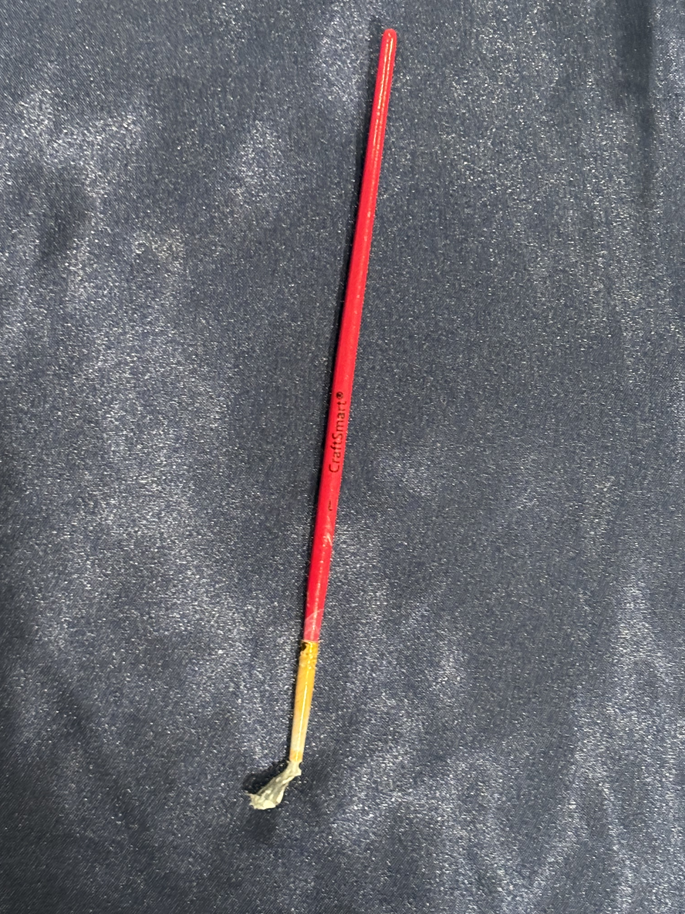
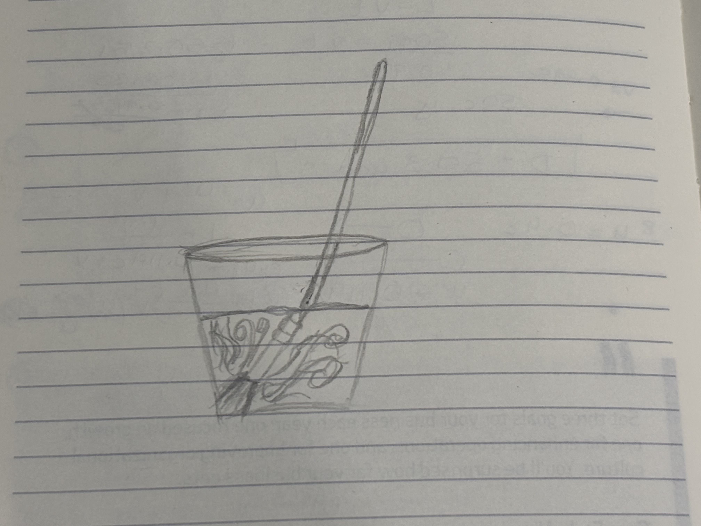

Description

This is a cheap paintbrush. It is over five years old. It has a red handle and a gold ferrule to secure the brown bristles. A ferrule is the bracket that holds the handle and bristles together. The bristles are not very stiff, almost feeling like fur rather than a paintbrush. As a result, it does not pick up too much paint and does not deposit a lot of paint either. The red paint on the handle is chipping off, revealing the wood's color and texture. The handle is very light and feels very easy to snap in half. The bristles are also uneven and come out very easily. A slight pull and the bristle comes loose. Bristles also fall out while painting, and I have to fish them off the canvas, which is annoying, but just speaks to the cheap quality of this brush. Regardless, it gets the job done.
Anecdote

I don’t really know when I got this paintbrush, or how. It's cheap and flimsy, it doesn’t really hold any paint, and I would never willingly spend money on it. Somehow it is in my possession, and I have no idea how I got it. For years, it’s been collecting dust somewhere in my room. However, recently, out of sheer necessity, I unearthed this paintbrush from the depths of my messy room and used it to make a hand-painted shirt for my boyfriend. Obviously, this wasn’t my brush of choice for such an important project, but it was the only one I had on hand since my good brushes were locked away under many boxes I couldn't move. It turned out to be the perfect brush for the effect I wanted, but because it was cheaply made, it took much longer than expected. It's time to part ways because I don’t see myself ever using such a tedious brush again. I probably would have thrown it away sooner if I’d remembered it existed, but I’m glad I didn’t, since it reminds me that I don’t need fancy supplies to make art, and I wouldn’t have been able to make the shirt without it. I used it to make a gift for someone important to me, so I am grateful for it.
Fun Facts
- The company that produces these brushes states on its website that it is committed to environmental stewardship through sustainable materials, packaging, and operations. Source Here
- This company also produces various types of paint and other art supplies and lists them at affordable prices. Source Here
- The earliest paintbrush comes from ancient China, around 3000 BCE. They used bamboo sticks with animal hair tied at the end. Source Here